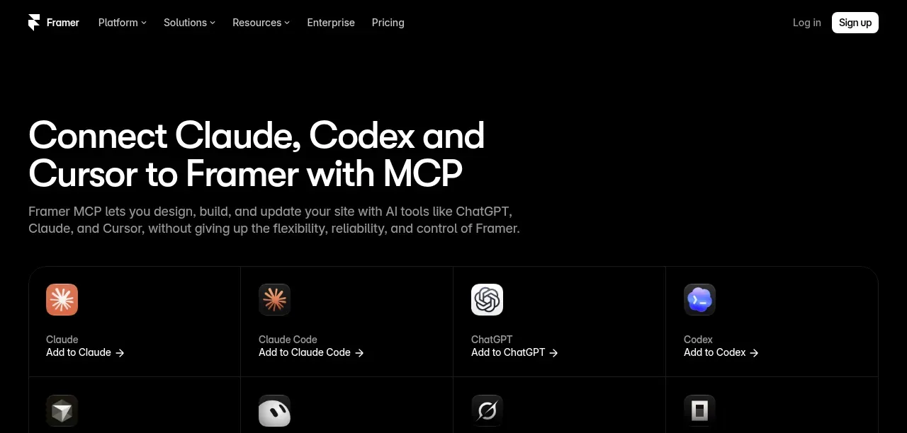
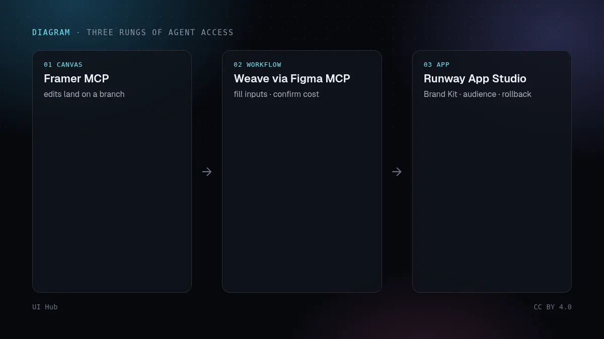
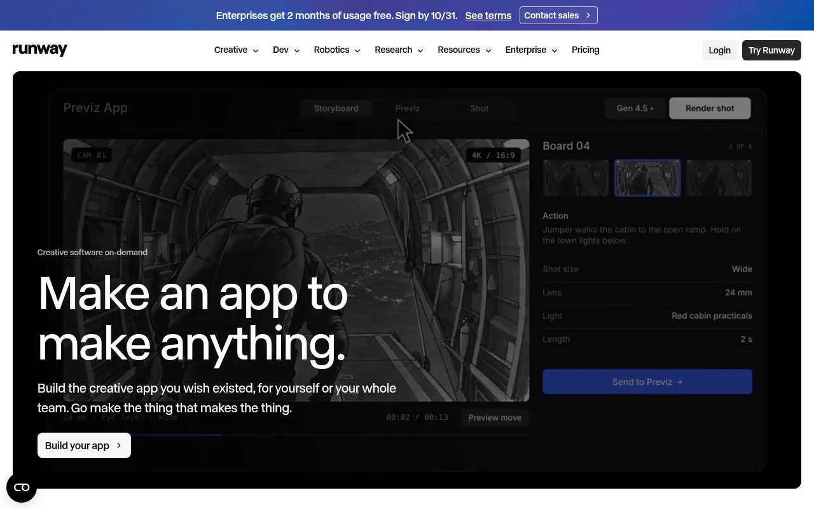

不久之前，一个想改网站或做一张活动图的 AI 智能体只有两条路：从零写代码，或者请你自己打开设计工具。10 月 22 日到 26 日，三款创作工具用三种不同方式填上了这道缝：Framer 让外部智能体编辑它的画布和 CMS，Figma 让智能体通过 Figma MCP 调用 Weave 的图像和视频模型，Runway 让任何人描述一个创作应用就能得到能用的成品。它们回答的是同一个问题——智能体在我的创作工具里能做什么？——只是关卡设在不同的地方。

https://mcp.framer.com/mcp。你批准连接后，智能体可以用项目已有的样式和组件新建页面、在桌面/平板/手机断点上改布局，管理 CMS 集合与条目，检查元数据、标题层级和替代文本。它使用你账号的权限。改动会留在项目或分支里，直到有人发布；智能体也能发布，但只在你明确要求时。Framer 的分支在 Review Changes 里显示差异，把分支应用到 main 和发布 main 是两个独立步骤。
这是同一架梯子的三级。最低一级是智能体直接操作画布（Framer）：你能碰的它都能碰，所以安全来自它的成果落在哪里——一个能看差异的分支——以及发布是一个单独、明确的动作。中间一级是智能体调用已发布的工作流（Weave）：它改不了素材的做法，只能填别人设计好的输入，而且每次付费运行都要过一道价格确认。最高一级是工作流变成给人用的应用（App Studio）：智能体的产出就是工具本身，护栏是它读取的 Brand Kit、发布对象和可以回滚的版本。
对设计团队来说，最实际的一课是：有价值的资产正在从「提示词」变成「已发布的工作流」。一条曾经出过一张好首屏图的提示词只是笔记；一个固定了参考图、品牌色和已知费用的 Weave tool 或 App Studio 应用，才是能放心让智能体跑一百次的东西。Framer 版本的同一思路，是项目自己的样式和组件，它的智能体被要求优先复用。如果你的设计系统没有被打包成这类形式，外部智能体就会即兴发挥，跑偏的产出就是这么来的。
两点提醒：Framer 的智能体使用你账号的权限，接在个人账号上的智能体能碰到该账号的所有项目；费用确认只有在有人认真看时才有用，批量运行（Weave 每次调用可跑 1 到 10 次）会让花费迅速翻倍。
numberOfRuns 设小，遇到「无法报价」就先跑一次再说。# creative-agent-policy.yml：一份起步规格
framer:
connect: https://mcp.framer.com/mcp # OAuth，只用工作区账号
always_branch: true
publish: human_only
review: [diff, branch_preview_url, 375px, dark_mode]
weave:
allow: published_tools_only # 生产环境不直接跑原始模型
confirm_cost: always
max_runs_per_call: 2
weekly_credit_budget: 500
app_studio:
audience_default: only_me # 审过再扩大
brand_kit: required
log: [page, cms_item, asset, prompt, workflow_version, credits]
智能体只能复用写下来的样式。给智能体的设计 Token和用 Lint 把智能体拉回你的设计系统讲了怎么打包；图层、品牌包与 JSON讲了生成图片的品牌包这一侧。审批环节本身见为替人办事的智能体设计审批；Figma 其他智能体功能见 Figma Code Layers 与 Specs。